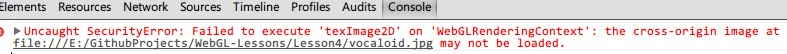
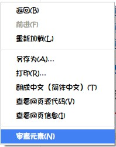
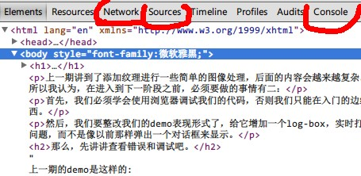
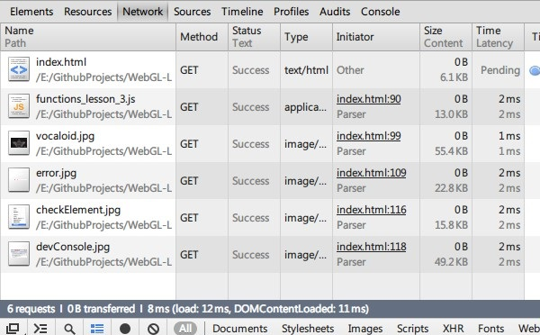
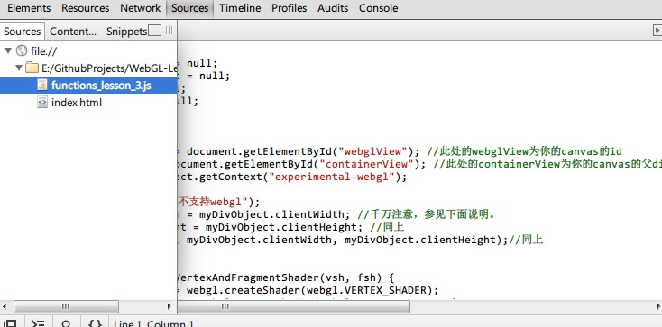
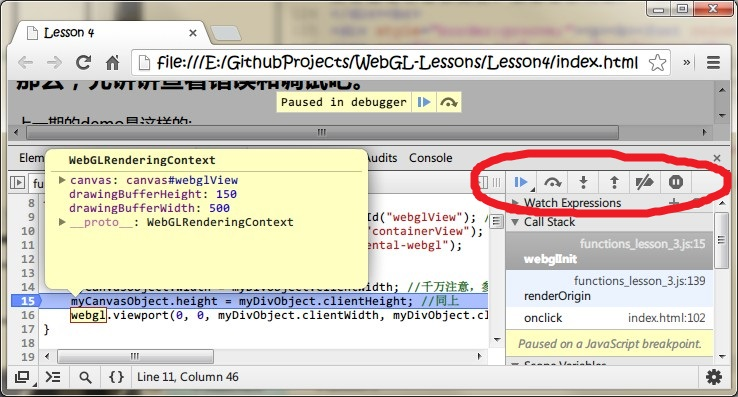
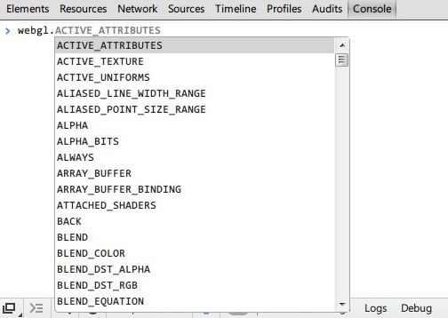
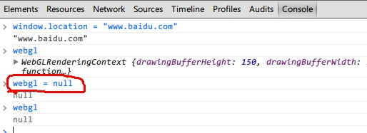

上一期讲到了添加纹理进行一些简单的图像处理，后面的内容会越来越复杂。所以也很容易出现各种问题，所以我认为，在进入到下一阶段之前，必须要做的事情有二：
首先，我们必须学会使用浏览器调试我们的代码，否则我们只能在入门的边缘徘徊，很难写出一个像样的东西。
然后，我们要整改我们的demo表现形式了，给它增加一个log-box，实时打印出我们代码中所有可能遇到的问题，而不是像以前那样弹出一个对话框来显示。
这里需要提示一下的是，有读者问我为什么他比对着教程做出来的练习代码无法看到任何东西, 这里我比对了一下几个浏览器，发现Chrome的核心会对直接打开的html文件报一下错误：
而该读者因为不知道如何查看错误而浪费了很多时间（这也是我为什么要马上讲一下调试和查看错误的原因）
首先，要想好好学WebGL的话，支持WebGL的浏览器最好多准备几个: IE11, Chrome, Firefox以及Opera (新版opera的核心跟chrome一模一样，如果有chrome的话，就可以不管opera了。国产的浏览器像搜狗啊，360什么的，如果要支持WebGL就切换到高速模式吧，切换以后跟chrome核心应该也是差不多的)， 这样的话在代码无法运行的时候可以多换几个浏览器试试看，不一定是自己的WebGL代码的问题
比如上面Chrome报的错是告诉你，那是一个"SecurityError"，Chrome不允许WebGL在直接打开文档的情况下访问img标签的内容。
而这样的情况在使用IE11和Firefox时就不会出现，依然正常运行。
那么，在哪里查看错误呢？
用浏览器打开你的代码文件或者相应的uri，右键选择“审查元素”(IE为“检查元素”)
然后你会看到下面的界面（为了节省篇幅，这里以chrome为例，其他浏览器请自行辨别，相信自己的智商^_^）
我用红线勾出了三处对于我们比较有用的功能，简要描述一下
Network
对于这个功能，会用的人肯定爱不释手了，因为在这个对话框下，会显示我们打开一个网站页面时加载到的所有东西，比如一段音乐，一个视频。有的人为了下载某个网站上的某个小音源或者视频而苦恼不已，找来找去找不到工具，殊不知最好的工具就是他自己的浏览器。只要打开Network页面，你可以直接右键另存下你所加载的这些东西（比如你在某贴吧或者论坛听到的一段语音，这种一般不提供下载链接什么的，抑或者你在bilibili.tv上看到的任何视频，都可以直接获取到，一般是hlv格式），比你去缓存页面寻找方便不知道多少倍。甚至……它还会显示你的一些特殊举动，比如你在使用网银或者支付宝，跟银行或者支付宝网站之间的所有请求包括get和post及其所有参数都会显示到里面。也许你可以利用这个功能去做一个简单的对付某投票页面的刷票工具，假如你是一个大学生，学校教务网站做得不够完善的话，分析一下请求的规则是可以成功的。
好了，有点跑题了。之所以我们会用到这个页面，是因为我们第二章介绍了使用js代码读取shader脚本和图片。如果我们的程序未能运行出结果，请查看此页面，看看你是否请求了正确的资源，以及资源是否请求到位。如果请求失败，一般它的status会被标记为404。
Sources
这个页面就是我们调试代码的页面了，单击该页面左上角会显示出我们用到js的文件，html代码将被隐藏。这里我们打开上一话的js文件，可以看到chrome已经把我们的文件内容显示出来了。
如果你会调试C/C++/java等等的代码，那么接下来你的操作就跟它们很相似了：
首先，我们随便选一行在左侧显示行号的地方点击一下，就算是为我们的程序打上了一个断点。
这时候如果你的程序正在运行WebGL代码，且要经过此行的话，整个Web页面会立即停下。然后屏幕上方会显示"paused in debugger"字样。如果没有出现，那么说明此时并没有代码正在执行或者经过该处，比如本教程提供的demo都是需要点击之后执行的，那么你就需要点击一下运行的按钮了，比如本文一开头引用到的demo下方提供的按钮。
当整个页面停住以后，右侧被我画上红圈的地方会变为可用状态，懂得调试的话就会知道依次是resume(继续运行直到下一个断点), step over(仅执行完当前所在行), step in(如果当前行有函数调用，则进入该函数并停在函数开头，否则跟step over一样), step out(跳出当前函数，如果无法跳出，比如包含循环，那么跟resume一样) 【黑字部分如果描述不准确还望邮件或者留言告知】，后面则是禁用/启用断点以及在异常处中断
页面处于调试状态时，你就可以像使用如VS之类的IDE编写C程序那样把鼠标移到变量之上查看变量信息了。右侧同样有Watch和Call Stack等。总之，chrome的调试功能用起来是相当友好的，个人非常喜欢。如果你用不习惯的话，也可以用Fire debug之类的东西， 也许操作不同，但最终肯定都能达到想要的效果。
Watch就是添加监视变量，为了不显得啰嗦，不讲了吧。
Call Stack顾名思义就是调用栈，可以看到当前执行到的代码所处的函数层次等信息，为了不显得啰嗦，也不讲了吧，你肯定明白的。
以及还有些杂七杂八的东西不见得你会用到，自己去摸索吧。
Console
控制台， 听名字就知道是很重要的东西。你可以在任何时候使用它。
比如我以前写过的一段点赞的小代码：如何利用js点赞
当然，本次不是介绍这类用法的。当你的web页面处于调试状态下时，你可以用这个控制台查看一些变量，比如本教程的demo将WebGL的上下文保存为webgl全局变量，那么你这时候就可以输入webgl查看它的信息。
如果只是查看变量信息的话，用sources窗口就足够了，用控制台还可以修改当前可用的变量：
如上图，只要输入 webgl = null，就可以把全局的webgl变量设置为null，这时候只要继续往下执行就会出现无法处理的fatal error导致程序停止执行了。（是不是想到利用这个在某些只利用js过滤关键词的网站上发表自由言论了呢^_^）
对于你编程有什么用呢？当然有用， 如果你在对某个固定参数进行调整的话，为了不重复修改代码，直接在这上面修改，成功之后再修改代码，是再合适不过的。不过由于WebGL的程序并不需要经过编译器编译链接的漫长等待，所以优势不怎么明显……总之，觉得有用并且好用的话，就用吧。
控制台的功能需要你自己去不断摸索的，一些命令也需要有所了解，在此篇幅有限不再讨论。
log窗口有很多选择，只要是一个可以显示文字的标签就够了，所以万能的div当然是可以的。不过既然提到了文字，那么还是用专门实现文字的textarea显得更科学。
直接上代码吧：好的，第四期教程到此为止，请关注lesson 5。系列教程地址:webgl-lesson.wysaid.org